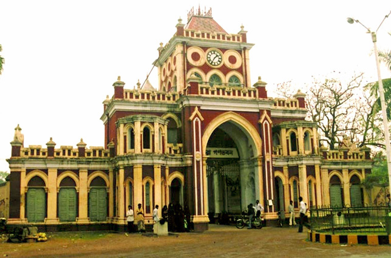
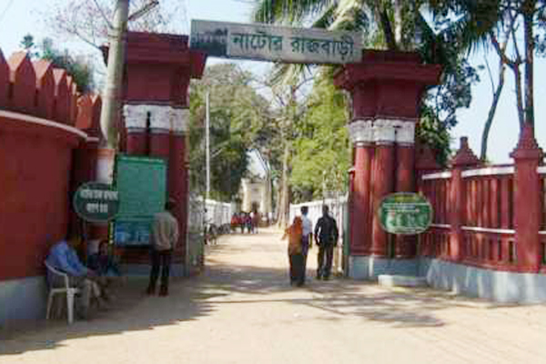
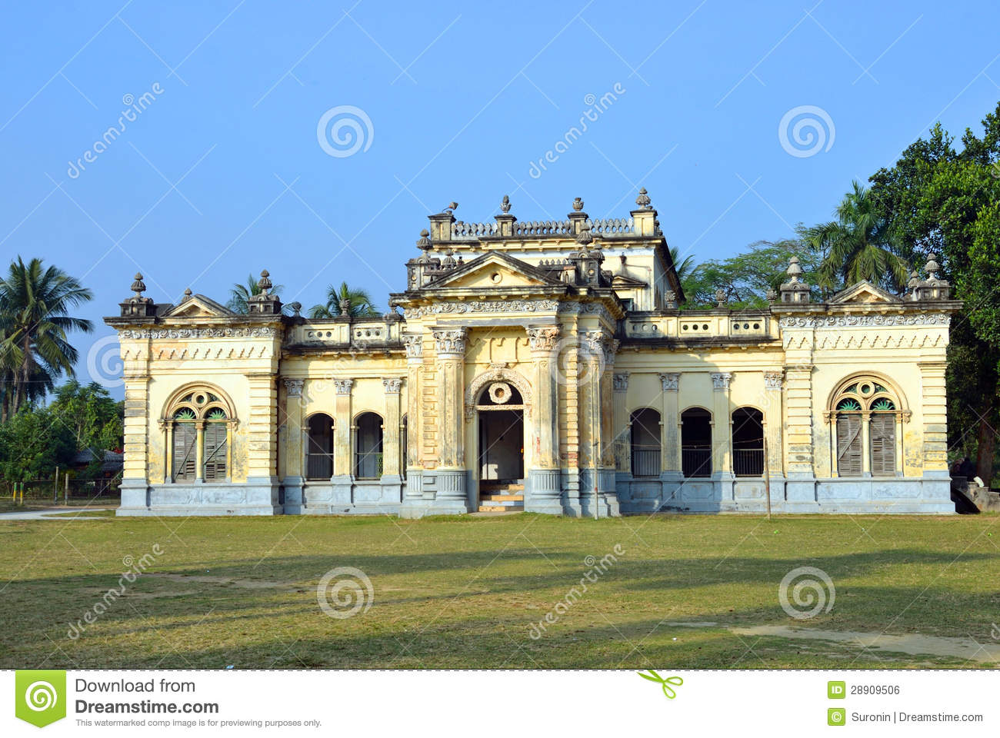
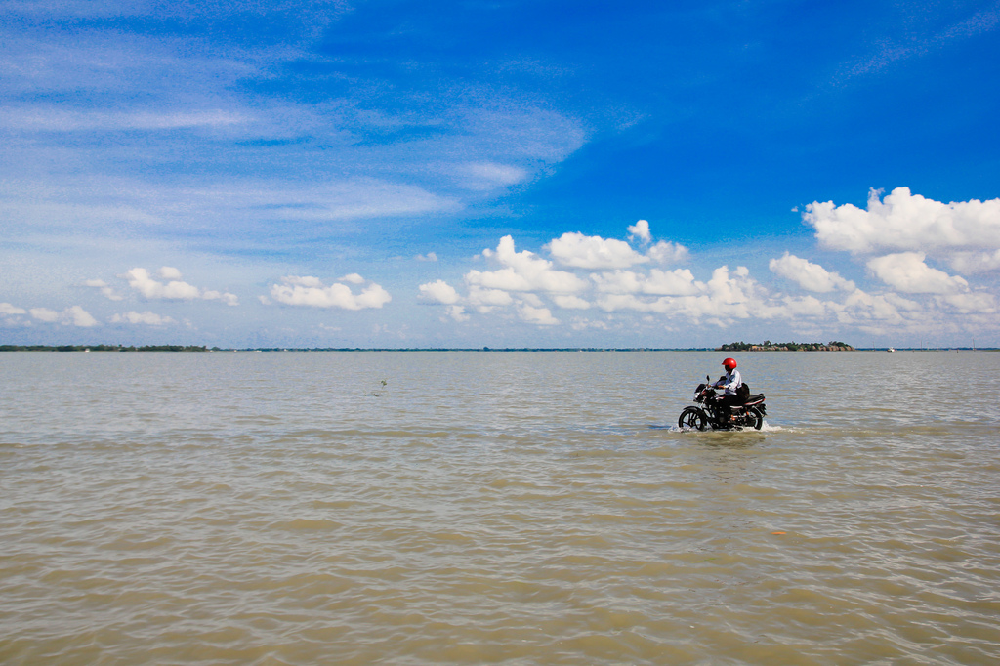

old seat of Maharajas with a beautiful palace 
About 40km. from Rajshahi by road is Natore, an old seat of Maharajas with a beautiful palace, now serving as the Uttara Ganabhaban
nator rajbari
  Zamindars of Natore were influential aristocratic Bengali Zamindars (rent-receiving ... Further information: Zamindar § Accession ... Nizamat (local rule by nawabs appointed y the Mughal emperor) and has taken complete control of the province of Bengal. ... The Rajbari or Palace of the Raja of Puthia is part of the complex.
cholon bil natore
 Chalan Beel (Bengali: চলনবিল) is a wetland in Bangladesh. It is a large inland depression, ... and Gurudaspur upazilas on Natore District, Chatmohar, Bhangura and Faridpur upazilas of ... Bio-ecological zones of Bangladesh.